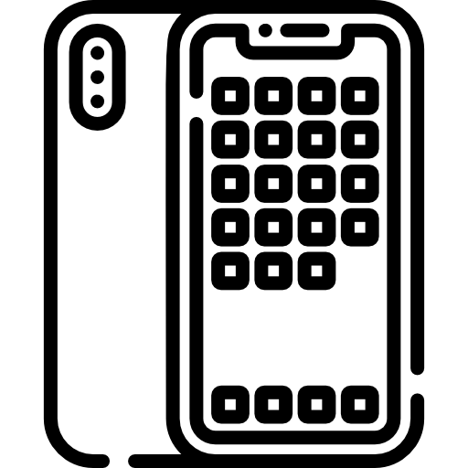

Cuando decimos o hablamos sobre el generar una adiccion a los aparatos electronicos nos referimos a la fuerte necesidad que siente el adicto por mantenerse en contacto con los aparatos electrónicos,
generalmente con acceso a internet. Aun así, además de estar conectado a la web, espera que dichos aparatos tengan unas características específicas para tener una experiencia más completa.
Aparatos electronicos.
10 males de las nuevas tecnologias
01/12/21
El dedo de Blackberry
Síndrome del túnel carpiano
Codo de tenista
Daños cervicales
Estrés visual
Obesidad infantil y juvenil
Insomnio
Problemas de audición
Infertilidad
Adicción
Aparatos electronicos.
Mal uso de los aparatos electronicos
16/02/22
Adicción a la telefonía móvil (Cortometraje de STEVE CUTTS)
La sociedad con el paso de los años y con las nuevas tecnologías,se a convertido en una sociedad dependiente de estas ya que es muy difícil
ver a alguien hoy en día sin un teléfono celular o si lo tiene que no lo use, porque ya se podría decir que es una extensión de nosotros
mismos, pero la verdad es que gracias a los Smartphones y todas las facilidades que nos dan no han alejado de nuestra realidad ya que esto
nos ha hecho “inútiles” en muchos aspectos ya que con estos podemos hacer cualquier cosa desde la comodidad de nuestra casa.
En este video el autor nos da a entender cómo la sociedad se a convertido en un esclavo de sus teléfonos celulares,haciendo parecer que estos
es una cárcel de nosotros,nos plantea el cómo la gente llegan a un punto de parecer zombies estando todo el tiempo en el celular y pareciera
ser que es una sociedad que no está feliz y en el único momento en el que aparentan ser felices es cuando están en el celular,también nos enseña
el cómo dos personas que pueden estar en el mismo lugar no se comunican hablando si no que se comunican mediante las redes sociales de su celular,
yo creo que este tema es muy importante de tratar ya que representa en que nos estamos convirtiendo como sociedad.
investigación
16/02/22
Los aparatos más Importantes
Los aparatos electrónicos son tecnologías que han evolucionado y cada vez van mejorando año tras año y modelo tras modelo,
siempre que sacan un nuevo modelo al mercado presume ser el más novedoso y que no hay ninguno que se le compare,pero la
realidad es que hay muchos productos que se les parecen,pero a lo largo de los años se han creado ciertos aparatos electrónicos
que han marcado época,los cuales son recordados por todo el alcance que tuvieron y a todas las personas que llegaron,Es la tecnología que
"cambió para siempre la forma en que vivimos, trabajamos y jugamos1
Los 9 aparatos electrónicos más importantes de la historia,El iphone, el iphone es el modelo de teléfono celular de la marca
iphone,este llegó a cambiar para siempre cómo nos comunicamos, jugamos, compramos, trabajamos y hacemos las tareas diarias.2
El televisor trinitron de Sony,Sony introdujo este a su línea de televisores de pantalla no curva FD Trinitron/WEGA. por la tecnología avanzada
que marcó la evolución de los televisores a color.La Macintosh de Apple: por "crear el estándar de la forma en que los seres humanos interactúan
con las computadoras". El Walkman de Sony: por ser el primer reproductor de música portátil, simple y accesible.La computadora modelo 5150 de IBM:
gracias a esta se abrieron también las licencias al sistema operativo DOS, lo que creó dos mundos de la informática: el de las Apple y el de las PC.
El reproductor de música Victrola: por haber hecho de los gramófonos un aparato del hogar. El radio de transistores TR1, de Regency: fue el primer
radio de transistores de bolsillo.La cámara de fotos Brownie de Kodak: una cámara de bolsillo barata, que popularizó la fotografía. El iPod de Apple:
por convencer a los amantes de la música a dejar atrás los CD y cambiar el panorama de la industria musical.
hábitos poco saludables
La impaciencia es un hábito que genera el uso excesivo del internet y de los aparatos electrónicos, esto afecta negativamente la capacidad de afrontar
las situaciones adversas que la vida presenta con frecuencia y que requieren, muchas veces, de procesos de larga duración3,al estar tanto
tiempo en contacto con los teléfonos nos acostumbramos a un ruido constante,como música,el ruido de las notificaciones,llamadas etc,también esto genera el
uso en las noches de estos lo que genera malos hábitos de sueño como insomnio, lo cual es algo muy difícil de quitar y genera consecuencias para la salud
fisica y psicologica
El uso excesivo puede generar muchos males para tu dia a dia, puede generar cambios en tu estado de ánimo,puedes tener un mal rendimiento en tu estado
laboral,entre otras muchas cosas,una de las principales causas de esto como se mencionó en el párrafo anterior es por el uso de estos por las noches y
disminuir las horas de sueño A este fenómeno se le conoce como vamping, término que procede de vampire (vampiro), ser de actividad nocturna4
esto ocurre gracias a la luz de onda corta emitida por los aparatos que utilizamos antes de dormir es la que provoca los problemas al usar pantallas en ese
momento.5
Formas de reducir el uso del celular
El celular como todos sabemos es algo que todos usamos pero en la mayor parte de los casos tendemos a usarlo de más,pero existen algunos consejos los cuales,además
de expertos que nos pueden ayudar a dejarlos de usar o al menos a disminuir su uso.Los paises que mas usan smartphones y/o tablets de latinoamérica según un estudio
de 2013 son(no están en orden):Costa Rica con el 19.72% de su población ,Brasil con 10.33%,Argentina con 12.10%,Bolivia con 12.24%,Colombia con 13.49%,México con 24.09%,
Chile con 23.19%,Perú con 13.11%,El Salvador con 15.41%,Venezuela con 17.44%.
Uso de los Celulares en Latinoamerica
Para disminuir el uso de estos existen varios consejos.Lo primero que tenemos que tomar en cuenta es para qué lo usamos, para qué lo queremos usar y qué queremos
cambiar6,una vez que ya sepas en que usas tu tiempo te será más fácil organizarte.Apagar las notificaciones ya que estas generan un estímulo de sonido
y de vibración lo cual te genera una necesidad de usarlo.Descarga aplicaciones las cuales te ayudan a ponerte límites,existen varias aplicaciones las cuales ayudan
a controlar el tiempo de uso en otras aplicaciones,estos son algunos de los consejos que podemos utilizar para menos nuestro celular.
1 y 2Los 10 aparatos electrónicos más importantes de la historia, según la revista Time - BBC News Mundo
3 y 4 IS373_parafrasis-01_ideas-para-no-perderse-en-internet.pdf (istmo.mx)
5¿Sabes qué es el ‘vamping’ y cómo te afecta a tu salud? (bbva.com)
6Cómo disminuir el uso del celular: 10 consejos para conseguirlo (psicologiaymundo.com)
Estos son los 10 países más móviles de América Latina (digitaltoo.com)
Meme
19/02/22
Un contenido menos serio
siempre que hablamos por mucho tiempo de algo serio,es bueno distraernos un rato para poder reirnos


 investigación
investigación Meme
Meme
 Sitios oficiales para mas informacion
Sitios oficiales para mas informacion